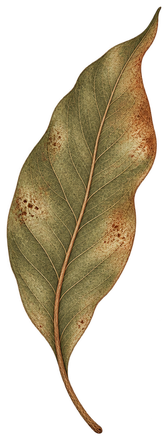

Laboratório independente · Tech 4 us Florianópolis · Brasil
Tecnologia a serviço
da humanidade.
Soberania Labs · Florianópolis · Brasil · rede aberta para o mundo
↓02Escolhas
A tecnologia nunca chega sozinha.
Com ela chegam escolhas.
Quem controla.
Quem entende.
Quem depende.
Quem decide.
Quem pode mudar.
Por trás de cada interface existe uma arquitetura.
Por trás de cada arquitetura existe uma forma de distribuir poder.
03Alta tecnologia · baixa dependência
Nós, que lutamos por liberdade e autonomia, vida simples e partilhas profundas, não devemos ser contra a tecnologia.
Precisamos estar profundamente interessados nela.
sistemasmelhores.
relaçõesmelhores.
infraestruturasmelhores.
interfacesmelhores.
automaçõesmelhores.
Mas “melhor” não significa simplesmente mais rápido, mais potente, a qualquer custo e em qualquer situação.
Significa tecnologia que possamos compreender, governar, adaptar e colocar a serviço de necessidades reais.
ALTA TECNOLOGIA.
BAIXA DEPENDÊNCIA.
Sem ostentação de poder tecnológico.
Sem desperdício de recursos.
O que precisamos, de fato, para cumprir nossos objetivos com eficiência e autonomia — e participar de igual para igual das redes de conexão, produção e conhecimento mundo afora?
04Inteligências
Inteligência é maior que inteligência artificial.
O laboratório não começa no computador.
E não termina nele.
O computador é um ponto de passagem em um fluxo vivo que conecta matéria, infraestrutura e sistemas abióticos às condições necessárias para que os sistemas bióticos possam florescer com mais cor, saúde, autonomia e respeito.
Nenhuma forma sozinhaConhecimento
Conhecimento
em conversa.
Vida.Relações.Demandas.Ciência.Código.Experiência.Território.Cultura.Memória.Comunidade.Natureza.
São formas diferentes de produzir e carregar conhecimento.
Nos interessa colocá-las em conversa, entendendo que cada uma possui seu lugar, seus métodos, seus limites e seu papel.
05Trabalho
Construímos.
Não apenas comentamos o futuro.
06O processo
Tecnologia começa
antes do código.
01/ 05
ENTENDER
Antes de escolher ferramentas, entender pessoas, contexto, restrições e o problema real.
Coletar requisitos.
Verificar demandas.
Questionar motivos.
Traçar um plano a partir daquilo que a vida realmente pede.
02/ 05
INVESTIGAR
Pesquisar aquilo que já existe, confrontar hipóteses e descobrir onde estão as perguntas difíceis.
Propor soluções, quebras de paradigma, alternativas e diferentes pontos de vista.
Nem sempre aquilo que é considerado normal ou necessário é, de fato, o ideal ou o essencial para alcançar o resultado real.
03/ 05
PROTOTIPAR
Tornar a ideia visível cedo o suficiente para poder mudá-la.
Saber quando mudar de direção.
Começar pequeno sem abandonar grandes objetivos.
Trabalhar a partir de fatos, dados e contratos claros para que um pequeno erro identificado no início não se transforme em um grande custo descoberto tarde demais.
04/ 05
CONSTRUIR
Transformar aquilo que funcionou em sistemas reais, testáveis e documentados.
Colocar solidez no etéreo.
Materializar conexões, trabalho e ideias através de código capaz de ampliar o potencial de ação.
05/ 05
TRANSFERIR CAPACIDADE
Uma boa entrega não deveria deixar o cliente mais dependente de quem a construiu.
Documentação, acesso, interoperabilidade e conhecimento fazem parte do produto.
Ensino, acesso e autonomia são essenciais para que as ferramentas permaneçam disponíveis a quem realmente precisa deles.
07Editor HTML
Ferramentas que deixam você dentro da ferramenta.
Este bloco é editável.
Clique. Mude o texto. Mova uma imagem. Redimensione. Experimente.
Não acreditamos que cada alteração de uma página precise voltar para uma fila de desenvolvimento.
Por isso também pesquisamos interfaces que devolvem às pessoas a capacidade de modificar aquilo que usam.
documento.htmlLeitura
Caderno aberto
Uma ferramenta também pode ser um lugar de liberdade.
Edite este texto. Leve o documento com você. O conteúdo continua sendo HTML.

matéria / memória
estudo de folha
01 / Documento
Primeiro, uma página para ler.
Prévia funcional · edição local, sem envio de dados.
08Projetos / Lab
Algumas experiências
que estamos construindo.
09Conexões
Nada existe isolado.
A vida traz a demanda.
A demanda requer serviço.
O serviço se organiza em processo.
O processo pode se digitalizar em software.
O software encontra o servidor.
O servidor requer energia.
A energia vem do território.
O território precisa de água.
A água nutre a agricultura.
A agricultura alimenta a comunidade.
A comunidade produz cultura.
A cultura transforma aquilo que imaginamos.
E aquilo que imaginamos volta para o código.
O sistema nunca é
apenas digital.
10Soberania
Soberania é poder escolher.
Não é se isolar.
É conhecer as dependências, abrir caminhos alternativos e não entregar o próprio futuro a uma única plataforma.
Poder levar seus dados.
Poder trocar de fornecedor.
Poder entender uma decisão.
Poder modificar uma ferramenta.
Poder hospedar em outro lugar.
Poder trabalhar com outras pessoas.
Poder continuar funcionando.
E poder desligar o que deixou de servir.
LER O MANIFESTO ↘11As referências
Não começamos do zero.
Educação e território
Paulo Freire.
Ailton Krenak.
Milton Santos.
Direitos, liberdade e cooperação
Martin Luther King Jr..
Malcolm X.
Frantz Fanon.
Angela Davis.
Piotr Kropotkin.
Ciência, tecnologia e poder
Miguel Nicolelis.
Yuk Hui.
Ruha Benjamin.
Sasha Costanza-Chock.
Catherine D’Ignazio & Lauren Klein.
Música e cultura
Bob Marley.
Fela Kuti.
E muitas outras pessoas, comunidades, pesquisadores, artistas e trabalhadores.
Não formam uma doutrina única.
Formam uma conversa.
12Sobre
Tecnologia com os pés no mundo.
Somos a Soberania Labs, um laboratório independente de tecnologia.
Observamos.
Perguntamos.
Experimentamos.
Construímos.
Documentamos.
Fazemos software, inteligência artificial, infraestrutura, pesquisa e experiências digitais.
Começamos nas pessoas, nos territórios e nas coisas que precisam continuar funcionando — não na ferramenta da moda.
Não fazemos tecnologia para aprisionar.
Fazemos ferramentas que possam ser entendidas, modificadas, compartilhadas e, quando for preciso, desligadas.
13Manifesto curto
O que orienta
nosso trabalho.
01Dignidade antes da eficiência.
02Autonomia antes da dependência.
03Supervisão humana antes da autoridade algorítmica.
04Conhecimento plural antes da monocultura intelectual.
05Interoperabilidade antes do aprisionamento.
06Ecologia como infraestrutura.
07Segurança como parte do projeto.
08Documentação como transferência de poder.
09Cooperação como tecnologia.
10Construção como parte da crítica.
14Caderno / jornal interno
Caderno do Laboratório
Pesquisa, código, território e ideias em andamento.
Um lugar para publicar aquilo que seria grande demais para uma legenda e inacabado demais para virar livro.
SOBERANIAJornal do laboratórioEdição de estudo / 001
O que realmente acontece quando agentes passam a fazer parte de uma operação.
Servidores, água, energia e a infraestrutura material escondida atrás da nuvem.
O que muda quando avaliamos software pela autonomia que ele produz.
Tecnologia, território, humor e a construção de uma identidade para o laboratório.